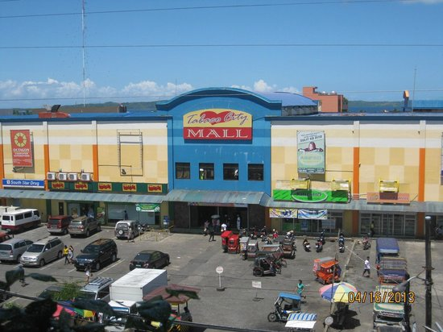
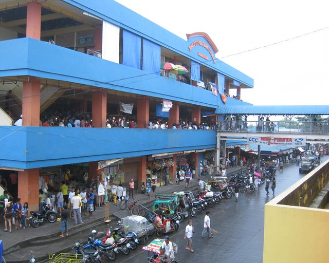

The vibrant soul of the "City of Love." Immerse yourself in the bustling daily life of Albay and discover the finest local crafts, fresh seafood, and warm Bicolano hospitality.

Tabaco City Market is a sprawling commercial hub where the heart of Albay’s trade beats strongest. It is a lively destination where visitors can find everything from the freshest catch of the sea to hand-woven abaca products, offering a true glimpse into the local lifestyle.

For decades, this market has served as the primary link between local farmers, skilled blacksmiths, and the community. Historically known for its high-quality cutlery and metalwork, the market continues to support the livelihoods of thousands while preserving Bicol’s trading heritage.
What to expect at the market.
Shop like a local.
Maximize your market visit.
Don't forget to look for the famous Tabak (knives)—they are world-class local products!